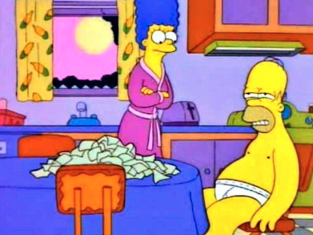

Home
Productos
Contacto
Registrate en nuestra pagina
Logueate en nuestra pagina
Elegi tus productos favoritos
argentina
Francia
Pasos para preparar un mate
colocar yerba en el mate
pero ojo que no sea mucha
hervir el agua a 70º
colocar el agua en el termo
Pasos para disfrutar un mate
pone musica
